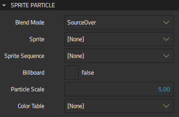
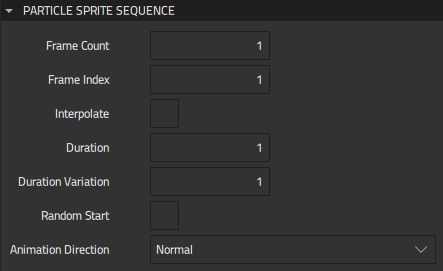
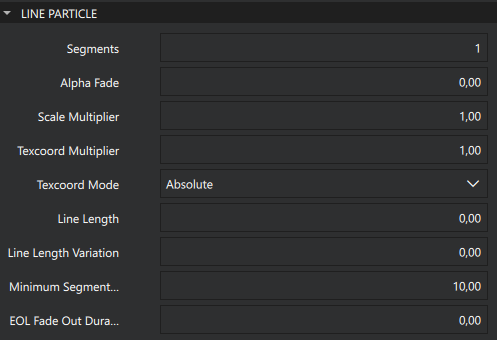
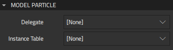
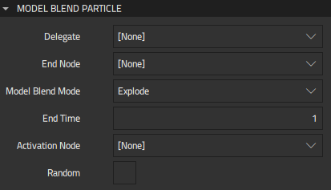
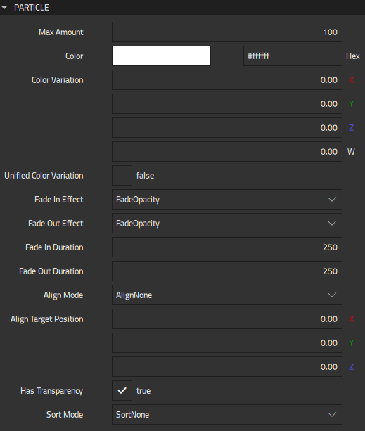

Logical Particles
All the particle system components act on logical particles. Each particle has a logical representation within the particle system, and this is what the components act upon. Not every logical particle needs to be visualized, and some logical particles could lead to multiple visual particles being drawn on screen.
Qt Design Studio supports the following logical particle components:
- Sprite Particle and Line Particle for 2D texture particles.
- Model Particle for 3D model particles. Model particles use instanced rendering to render thousands of particles, with full materials and lights support.
You can use the following components to add and modify logical particles:
Sprite Particle
Specify properties for sprite particles in Properties > Sprite Particle.

Blend mode determines whether particles are blended using source over, screen, or multiply mode. If you select SourceOver, the pixel component values from a foreground source are written over the source by using alpha blending. If you select Screen, the values are negated, then multiplied, negated again, and written. If you select Multiply, they are multiplied and written.
Sprite defines the Texture component used for the particles. For example, to use an image of a snowflake to simulate snow, create an instance of the Texture component with the image as the Source.
In Sprite sequence, select the Sprite Sequence component instance for the particle if the sprite texture contains a frame sequence. If your image only has a single sprite frame, don't set this value.
Select Billboard to specify that the particle texture should always be aligned face towards the screen. Enabling this property automatically disables Particle > Align mode.
Particle scale specifies the scale multiplier of the particles. To adjust particle sizes in the emitter, set Particle Emitter properties.
In Color table, select the Texture component that is used for coloring the particles. The image can be a 1D or a 2D texture. Horizontal pixels determine the particle color over the value you set in Particle Emitter > Life span. For example, when the particle is halfway through its life, it will have the color specified halfway across the image. If the image is 2D, a vertical row is randomly selected for each particle. For example, a 256 x 4 image contains 4 different coloring options for particles.
Sprite Sequence
Specify properties for a sprite particle sequence that contains a frame sequence in Properties > Particle Sprite Sequence.

Frame count specifies the amount of image frames in a sprite. A particle animates through these frames during its duration. The frames should be laid out horizontally in the same image file. For example, the sprite could be a 512x64 image, with the frame count of 8. This would make each particle frame size 64x64 pixels.
Frame index specifies the initial index of the frame. This is the position between frames where the animation is started. For example, when the frame index is 5 and Animation direction is set to Normal, the first rendered frame is 5. If the animation direction is set to Reverse, the first rendered frame is 4.
The value of Frame index must be between 0 and the value of Frame count minus 1. When Animation direction is set to SingleFrame and Random start is disabled, all the particles will render sprites with the frame index.
Enable Random start to start the animation from a random frame between 0 and Frame count minus 1. This allows animations to not look like they all just started when the animation begins.
Interpolate determines whether sprites are blended between frames to make the animation appear smoother.
Duration specifies the time in milliseconds that it takes for the sprite sequence to animate. For example, if the duration is 400 and the Frame count is 8, each frame will be shown for 50 milliseconds. When the value is -1, Particle > Life span is used as the duration.
Duration variation defines the duration variation in milliseconds. The actual duration of the animation is between duration minus duration variation and duration plus duration variation.
Animation direction defines the animation playback direction of the sequence. Select Normal to play the animation from the first frame to the last frame and to jump back to the first frame from the last one. Select Reverse to reverse the normal order. Select Alternate or AlternateReverse to alternate between normal and reversed orders.
If you don't want to animate the frame, select SingleFrame. When Random start is disabled, the frame set in Frame index is rendered. When it is enabled, each particle renders a random frame.
Line Particle
Specify properties for line particles in Properties > Line Particle.

Segments defines the number of segments in each line.
Alpha Fade defines the alpha fade factor of the lines. The value range is [0, 1]. When the value is greater than 0.0, the line fades more the further the segment is from the first particle segment.
Scale Multiplier modifies the line size for the line segments. The value range is [0, 2]. If the value is less than 1.0, the line gets smaller the further a segment is from the first segment and if the value is greater than 1.0 the line gets bigger.
Texcoord Multipier defines the texture coordinate multiplier of the line. This value is factored to the texture coordinate values of the line.
Texcoord Mode defines the texture coordinate mode of the line.
Line Length defines the length of the line. If the value is set, the line length is limited to the value. In this case the minimum delta of the line is the length divided by the segment count. If the value is not set, the line length varies based on the particle speed, segment count, and minimum delta.
Line Length Variation defines the length variation of the line. This parameter is not used if Line Length has not been set. When the length is set, this parameter can be used to vary the length of each line.
Minimum Segment Length defines he minimum length between segment points. This parameter is ignored if Line Length is set.
Eol Fade Out Duration defines the end-of-life fade-out duration of the line. If set, each line remains in the place it was when the particle reached the end of its lifetime, then fades out during this time period.
Model Particle
Specify properties for model particles in Properties > Model Particle.

In Delegate, select the 3D Model component that defines each object instantiated by the particle.
Instance table provides you with access to the internal instancing table of the model particle that is used to implement efficient rendering. This table can be applied to the instancing property of models that are not part of the particle system.
You can use this feature also to provide an instancing table without showing any particles. This is done by omitting the delegate.
Model Blend Particle
Specify properties for model blend particles in Properties > Model Blend Particle.

The Model Blend Particle component blends a particle effect with a 3D Model component. The provided model needs to be triangle-based. Each triangle in the model is converted into a particle, which are then used by the emitter. Instead of particle shader, the model is shaded using the material specified in the model. The way the effect is blended is determined by Model blend mode.
The possible blend modes are:
- Construct, where the model is constructed from the particles.
- Explode, where the model is converted into particles.
- Transfer, where Construct and Explode are combined to create an effect where the model is transferred from one place to another.
The particles are emitted in the order they are specified in the model unless Activation node is set or Random is enabled.
In Delegate, select the 3D Model component that defines each object instantiated by the particle.
End node specifies the transformation for the model at the end of a particle effect. It defines the size, position, and rotation where the model is constructed when you set Model blend mode to Construct or Explode.
End time specifies the end time of the particle in milliseconds. The end time is used during construction and defines duration from particle lifetime at the end where the effect is blended with the model positions. Before the end time, the particles' positions are defined only by the particle effect, but during the end time the particle position is blended linearly with the model end position.
In Activation node, select the component instance that activates particles and overrides the regular emit routine. The activation node can be used to control how the particles are emitted spatially when the model is exploded or constructed from the particles. The activation node emits a particle if the center of that particle is on the positive half of the z-axis of the activation node. Animating the activation node to move trough the model will cause the particles to be emitted sequentially along the path the activation node moves.
To emit particles in random order instead of in the order in which they are specified in the model, select Random.
Common Particle Properties
The properties that you specify for logical particles in Properties > Particle determine the common appearance of all particles.

Max amount allocates data for particles. Setting this value instead of just growing the data based on Particle Emitter > Emit rate, Life span, and Emit Bursts enables you to optimize memory usage and to modify the emit rate and life span without reallocation.
Color determines the base color for particles. You can use the Color Picker to select colors. For color variation, set values in Color variation. The values are in RGBA order (X=red, Y=green, Z=blue, and W=alpha), and each value should be between 0.00 (no variation) and 1.00 (full variation).
To apply color variation uniformly for all the color channels, enable Unified color variation. This applies all variations with the same random amount.
Fade in effect and Fade out effect define the fading effect used when the particles appear. Fading is implemented by changing the value of opacity or scale between 0 and 1 over the time specified in milliseconds in Fade in duration and Fade out duration. Fading duration is calculated into the particle lifespan. For example, if Particle Emitter > Life span is 3000, Fade in duration is 500, and Fade out duration is 500, the particle will be fully visible for 2000 ms.
Align mode determines the direction that particles face:
- Select AlignNone to use the value set for the emitter component in Particle Rotation > Rotation.
- Select AlignTowardsTarget to align the particles towards the direction set in Align target position.
- Select AlignTowardsStartVelocity to align the particles towards their starting velocity direction.
This value takes no effect if Sprite Particle > Billboard is enabled.
Unlike the materials used with the models, particles default to being rendered with assuming semi-transparency, and so with blending enabled. This is the desired behavior most of the time due to particle textures, color (alpha) variations, fadings, and so on. If you don't need the blending, disable Has transparency for possible performance gain.
Sort mode determines the order in which the particles are drawn. You can sort particles based on their distance from the camera, farthest first, or lifetime, newest or oldest first.
The particles are emitted from the location of the Emitter or Trail Emitter component instance.